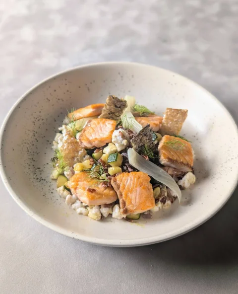
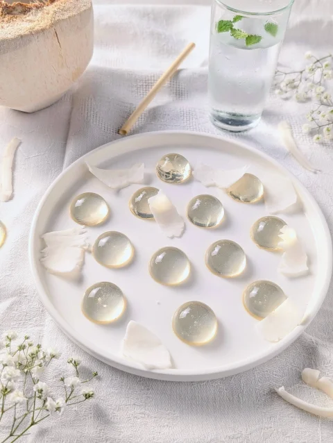
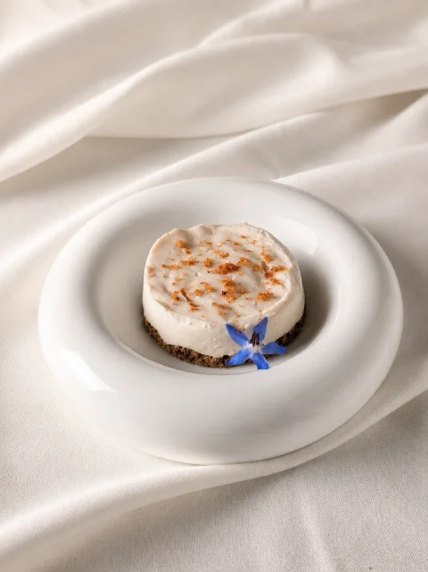
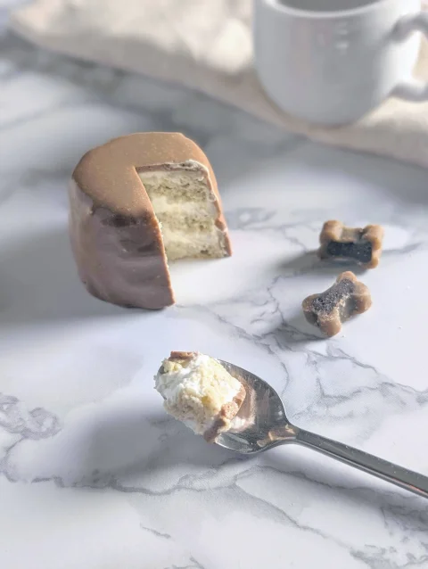
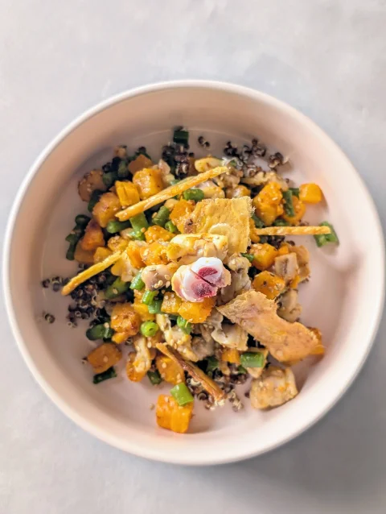

La cuisine de Vénus.
By Sébastien · Cuisinier · Développeur web
La Cuisine de Vénus, c'est un blog de recettes de cuisine maison dédiées aux chiens et réalisées par un cuisinier. On y retrouve des classiques de la cuisine, des plats de rations ménagères, des friandises. Tout ça pensé pour la truffe : de la vraie gastronomie canine!
Ici on parle d'odeurs, de textures, de transformations culinaires. Du cru, du cuit, de la croquette — pas de jugement. Chaque recette est testée par Vénus et Vanille — leur enthousiasme, ou leur dédain poli, c'est notre seul critère d'approbation.




